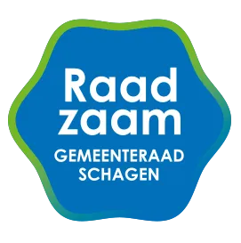
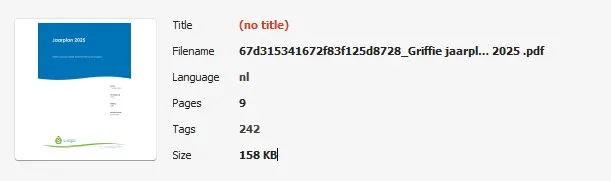
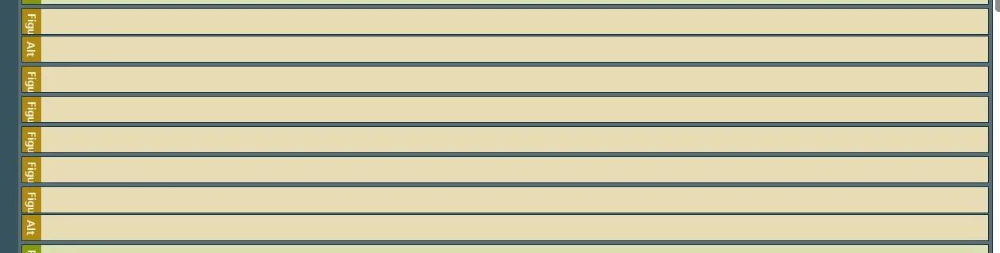
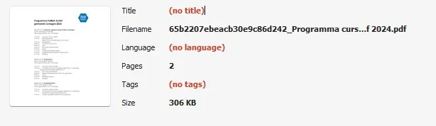

Alle bevindingen zijn opgelost.
Samenvatting
Wij hebben de website raadzaamschagen.nl onderzocht tussen 1 en 5 december 2025. De hercontrole is uitgevoerd op 27 februari 2026.
Op dit moment zijn alle 55 succescriteria op de webpagina's als voldoende beoordeeld. De PDF's bevatten toegankelijkheidsproblemen.
In opdracht van

-
Voldoet
-
Afgekeurd
55
Totaal
- voldoet
Impact
Klein: 0
Medium: 0
Groot: 0
Type
Content: 0
Techniek: 0
Waarneembaar
- van 20
Bedienbaar
- van 20
Begrijpelijk
- van 13
Robuust
- van 2
Deze SC zijn afgekeurd:
Over dit onderzoek
- Onderzocht door
- Proper Access
- Opdrachtgever
- Datum rapport
- 27 februari 2026
- Standaard
- WCAG 2.2
- Methodologie
- WCAG-EM
Scope van het onderzoek
- Alle pagina's op de website raadzaamschagen.nl
- Alle PDF's op de website raadzaamschagen.nl
Buiten scope:
- Subwebsite(s) waarbij de HTML en/of het systeem afwijkt van de onderzochte website
- De van derden afkomstige inhoud (wettelijke uitzondering voor de overheid)
Basisniveau toegankelijkheidsondersteuning
- Mozilla Firefox, versie 143
- Google Chrome, versie 143
- Apple Safari, versie 18
- PAC software to test PDF
- NVDA schermlezer in combinatie met Firefox
- VoiceOver schermlezer in combinatie met Safari
- Andere gangbare browsers en hulpapparatuur
Technologieën van de website
- HTML
- CSS
- JavaScript
- WAI-ARIA
- SVG
Voortgang opgeloste bevindingen
Samenwerken met je team
Exporteer alle bevindingen als CSV-bestand. Je kunt het in een (online) spreadsheet inladen om met je team samen te werken.
Importeer in Jira
Exporteer alle bevindingen als Jira-compatibel CSV-bestand. Je kunt het direct importeren via Jira > Issues > Import issues from CSV.
Zelf bijhouden in de browser
Houd per bevinding bij of het is opgelost. Je voortgang wordt opgeslagen in jouw browser. Niemand anders kan je resultaat zien.
0 van
0 opgelost
Gevonden problemen
Filter bevindingen op:
Impact:
Type:
Status:
Geen bevindingen gevonden voor dit filter.
Link naar pagina: https://www.raadzaamschagen.nl/raadsleden/andre-groot
Alle bevindingen zijn opgelost.
Link naar pagina: https://www.raadzaamschagen.nl/besluitvorming
Geen nieuwe bevindingen.
Link naar pagina: https://www.raadzaamschagen.nl/contact
Geen nieuwe bevindingen.
Link naar pagina: https://www.raadzaamschagen.nl/de-griffie
Geen nieuwe bevindingen.
Link naar pagina: https://www.raadzaamschagen.nl/
Alle bevindingen zijn opgelost.
Link naar pagina: https://www.raadzaamschagen.nl/disclaimer
Alle bevindingen zijn opgelost.
Link naar pagina: https://www.raadzaamschagen.nl/fractiefinancien
Alle bevindingen zijn opgelost.
Link naar pagina: https://www.raadzaamschagen.nl/nieuws/klimaatexamen-was-leuk-en-leerzaam
Alle bevindingen zijn opgelost.
Link naar pagina: https://www.raadzaamschagen.nl/nieuws
Alle bevindingen zijn opgelost.
Link naar pagina: https://www.raadzaamschagen.nl/college-van-burgermeester-en-wethouders
Geen nieuwe bevindingen.
Link naar pagina: https://www.raadzaamschagen.nl/de-griffie
Link naar PDF: https://cdn.prod.website-files.com/5f5245bc6d7f3d2d4b6484ff/67d315341672f83f125d8728_Griffie jaarplan 2025 .pdf
#1 - PDF-document heeft geen titel

Dit pdf-document heeft geen titel ingesteld in de bestandseigenschappen.
Zelfs als er een titel op de eerste pagina staat, moet in de PDF-instellingen ook een documenttitel worden ingesteld. Bij het openen van een pdf in een pdf-lezer (zoals Adobe Acrobat of een browser) wordt meestal de bestandsnaam bovenaan in de titelbalk getoond, bijvoorbeeld document123.pdf. Wanneer in de pdf-metadata echter een documenttitel is ingesteld, wordt deze titel in plaats van de bestandsnaam weergegeven. Dit maakt het document toegankelijker voor bezoekers met verschillende beperkingen, omdat zij dan snel en gemakkelijk kunnen bepalen of het document relevant is.
Los het op in Adobe Acrobat:
- Open het pdf-document in Adobe Acrobat.
- Ga naar Bestand > Eigenschappen.
- Ga naar het tabblad Beschrijving.
- Vul in het veld Titel een beschrijvende titel in, bijvoorbeeld: "Rapport: Bevolkingscijfers 2023".
- Klik op OK en sla het bestand op.
#2 - Koppen zijn niet als kop gemarkeerd
In dit pdf-document staan verschillende kopjes die niet als kopjes zijn gemarkeerd. Zie bijvoorbeeld 'Jaarplan 2025' en 'Griffie Jaarplan 2025 Gemeenteraad Schagen'.
Op deze manier verschilt de visuele informatiestructuur van de structuur van het document in de tags.
Oplossing:
Vervang de P-tag door de H-tag, zodat de tag-structuur gelijk is aan de visuele structuur.
#3 - Informatieve afbeeldingen hebben geen alt-tekst
Dit pdf-document bevat informatieve afbeeldingen zonder tekstalternatieven (alt-tekst). Dit komt voor op pagina 1 bij een logoafbeelding.
Afbeeldingen die met de Figure-tag zijn geplaatst, moeten altijd een beschrijving (alt-tekst) hebben. De Figure-tag is alleen bedoeld voor informatieve afbeeldingen. Schermlezers lezen de alt-tekst voor, zodat blinde bezoekers ook alle informatie tot zich kunnen nemen. Omdat de alternatieve tekst nu ontbreekt, lezen schermlezers alleen “afbeelding” voor. Blinde bezoekers kunnen hierdoor het gevoel krijgen dat ze inhoud missen.
Oplossing:
Voeg tekst alternatief toe aan deze informatieve afbeeldingen.
#4 - Er is een afbeelding die tekst bevat
In dit pdf-document staat op pagina 1 een afbeelding met ingesloten tekst.
Een afbeelding met tekst erin is voor veel bezoekers ontoegankelijk. Het is beter om deze tekst als gewone tekst in het document te plaatsen. Dan kunnen mensen die slechtziend zijn de teksteigenschappen aanpassen, zodat het beter leesbaar is voor hen. Dat kan nu niet, omdat de tekst in een afbeelding staat.
Oplossing:
Zet de tekst die nu in de afbeelding staat als gewone tekst in het document.
#5 - Decoratieve afbeeldingen zijn toegevoegd met figure-tags

In dit pdf-document staat op pagina 1 een decoratieve achtergrond afbeelding die is toegevoegd via een Figure-tag en geen beschrijving heeft. De Figure-tag is alleen bedoeld voor informatieve afbeeldingen en heeft altijd een beschrijving nodig.
Oplossing:
Markeer deze afbeelding als artefact, zodat deze wordt verborgen voor schermlezers.
#6 - De inhoudsopgave maakt gebruik van visuele stippen in plaats van de juiste tags
In de inhoudsopgave van dit PDF-document worden paginanummers uitgelijnd met visuele puntjes (bijvoorbeeld “Inleiding ………….3”) in plaats van met een correcte TOC-structuur. Schermlezers lezen deze puntjes letterlijk voor, wat de leesvolgorde verstoort en voorkomt dat ondersteunende technologieën de relatie tussen sectietitels en bijbehorende paginanummers goed kunnen begrijpen.
Omdat de inhoudsopgave niet is getagd met de juiste elementen — zoals TOC en TOCI — en omdat de paginanummers niet zijn gemarkeerd als daadwerkelijke navigatielinks, kan dit deel van het document niet correct worden geïnterpreteerd door schermlezers. Daardoor is het niet mogelijk om succescriteria met betrekking tot semantische structuur, zoals een correcte koppenhiërarchie of betekenisvolle navigatie, betrouwbaar te toetsen.
Oplossing:
Tag de inhoudsopgave met de juiste PDF-structuurelementen. Vervang visuele puntleiders door correct getagde TOC-items met een duidelijke structuur en — waar van toepassing — functionele links naar de bijbehorende secties.
PDF Programma Politiek Actief gemeente Schagen 2024 Link naar pagina: https://www.raadzaamschagen.nl/nieuws/word-jij-politiek-actief
Link naar PDF: https://assets-global.website-files.com/5f5245bc6d7f3d2d4b6484ff/65b2207ebeacb30e9c86d242_Programma cursus Politiek Actief 2024.pdf
#7 - PDF-document heeft geen titel

Dit pdf-document heeft geen titel ingesteld in de bestandseigenschappen.
Zelfs als er een titel op de eerste pagina staat, moet in de PDF-instellingen ook een documenttitel worden ingesteld. Bij het openen van een pdf in een pdf-lezer (zoals Adobe Acrobat of een browser) wordt meestal de bestandsnaam bovenaan in de titelbalk getoond, bijvoorbeeld document123.pdf. Wanneer in de pdf-metadata echter een documenttitel is ingesteld, wordt deze titel in plaats van de bestandsnaam weergegeven. Dit maakt het document toegankelijker voor bezoekers met verschillende beperkingen, omdat zij dan snel en gemakkelijk kunnen bepalen of het document relevant is.
Los het op in Adobe Acrobat:
- Open het pdf-document in Adobe Acrobat.
- Ga naar Bestand > Eigenschappen.
- Ga naar het tabblad Beschrijving.
- Vul in het veld Titel een beschrijvende titel in, bijvoorbeeld: "Rapport: Bevolkingscijfers 2023".
- Klik op OK en sla het bestand op.
#8 - De taal is niet ingesteld in de metadata
In de metagegevens van deze pdf is de taal niet ingesteld.
Het is belangrijk om de taal in te stellen. Dan kan hulpsoftware de informatie uit het bestand met de juiste uitspraakregels voorlezen.
Los het op in Adobe Acrobat:
- Open het pdf-document in Adobe Acrobat.
- Ga naar Bestand > Eigenschappen.
- Ga naar het tabblad Geavanceerd.
- Selecteer in het veld Taal de juiste taal voor het document, bijvoorbeeld Nederlands (Dutch).
- Klik op OK en sla het bestand op.
#9 - Structuur van pdf-document is niet in codes vastgelegd
Dit pdf-document bevat geen codes, waardoor de inhoud niet toegankelijk is voor schermlezers. Bovendien kunnen wij de pdf hierdoor niet volledig onderzoeken. Het gaat om alle succescriteria die met de pdf-codelaag te maken hebben, zoals semantische koppen en alternatieve teksten bij afbeeldingen. Als je dit oplost, is het dus mogelijk dat er nieuwe toegankelijkheidsproblemen ontstaan die nu nog niet aan het licht zijn gekomen.
Oplossing:
Voeg codes toe aan het document die de structuur van het document weergeven.
Opslaan als getagde PDF in Word (Windows)
Ga naar Bestand. Kies Opslaan als Adobe PDF (als je Acrobat hebt) of ga naar Meer → Exporteren → PDF/XPS-document maken. In het venster dat opent, klik je op Opties. Zet een vinkje bij Documentstructuurtags voor toegankelijkheid en bij Bladwijzers maken met koppen. Op deze manier kunnen gebruikers met het toetsenbord snel van sectie naar sectie springen. Dit werkt alleen wanneer echte kopstijlen zijn gebruikt.
Opslaan als getagde PDF in Word (Mac)
Ga naar Bestand → Opslaan als, kies PDF in het keuzemenu en selecteer Best voor elektronische distributie en toegankelijkheid, dat gebruikmaakt van Microsoft online service. Op Mac worden bladwijzers automatisch op basis van de koppen gegenereerd, zonder dat hiervoor instellingen hoeven te worden aangepast.
Link naar pagina: https://www.raadzaamschagen.nl/raadsleden
Alle bevindingen zijn opgelost.
Link naar pagina: https://www.raadzaamschagen.nl/nieuws/word-jij-politiek-actief
Geen nieuwe bevindingen.
Link naar pagina: https://www.raadzaamschagen.nl/search?query=ra
Alle bevindingen zijn opgelost.
Over dit onderzoek
Leeswijzer
Onze rapporten zijn anders. Bij het bespreken van de gevonden problemen volgen wij niet de structuur van de norm, maar die van jouw website of app. Hierdoor kun je gewoon per pagina of scherm aan de slag gaan. Wel zo makkelijk! Je vindt verderop een overzicht van alle pagina’s met problemen.
We geven je bij elk gevonden issue een paar voorbeelden, maar niet een complete lijst. Controleer zelf of het probleem ook nog op andere plekken voorkomt. Zie het rapport als een leidraad.
Gebruikte norm
Dit onderzoek laat zien in hoeverre de website op dit moment voldoet aan WCAG 2.2, niveau A en AA. WCAG staat voor Web Content Accessibility Guidelines. Dit is de internationale norm voor digitale toegankelijkheid. De Europese norm EN 301 549 bevat alle eisen van WCAG op niveau A en AA.
In dit rapport hebben we korte beschrijvingen van de succescriteria uit de norm opgenomen, met een algemene uitleg erbij. Wil je ze helemaal lezen? Bekijk dan de documentatie van WCAG.
Gebruikte onderzoeksmethode
We gebruiken de onderzoeksmethode WCAG-EM van het W3C. Het proces ziet er als volgt uit:
- vaststellen wat binnen en buiten scope valt
- vaststellen welke technologieën zijn gebruikt
- steekproef (sample) samenstellen
- steekproef onderzoeken
- gevonden issues beschrijven
Het grootste deel van het onderzoek doen we met de hand. Voor een deel van de toegankelijkheidseisen gebruiken we automatische tools als ondersteuning, zoals axe-core en Chrome Developer Tools.
Belangrijk om te weten
Dit rapport helpt je om de toegankelijkheid van je website te verbeteren. Maar let op: het is geen definitieve, volledige lijst van alle aanwezige toegankelijkheidsproblemen. Dat zit zo:
Het is een steekproef
Ten eerste is het onderzoek gebaseerd op een steekproef. Die is op een betrouwbare manier genomen, en de meeste problemen zullen daardoor zeker aan het licht komen. Toch kan een probleem net buiten de steekproef vallen. Bij een volgend onderzoek kan het wel ontdekt worden.
Op basis van falsificatie
We beoordelen vanuit het principe van falsificatie. Dat houdt in dat we proberen te bewijzen dat iets niet waar is, in plaats van te bevestigen dat het klopt. ‘Voldoet’ betekent daarom dat we geen reden hebben gevonden om een punt af te keuren. Maar als we later wél een reden vinden, kan het alsnog worden afgekeurd.
Voortschrijdend inzicht
Het komt voor dat de beoordeling van een succescriterium op detailniveau verandert. De norm beschrijft namelijk niet élk mogelijk scenario. Samen met andere onderzoeksbureaus overleggen we hoe we met bepaalde situaties omgaan. Zo kan iets dat nu wordt afgekeurd, soms bij een volgend onderzoek worden goedgekeurd en andersom.
Oplossen leidt tot nieuw probleem
Ten slotte kan het gebeuren dat bij het oplossen van een probleem onbedoeld een nieuw toegankelijkheidsprobleem ontstaat. Dat komt dan bij een volgend onderzoek pas naar voren.
Hoe werkt dit rapport?
Bevindingen bekijken en filteren
Alle gevonden toegankelijkheidsproblemen staan onder Gevonden problemen. Je kunt de bevindingen filteren op:
- Impact (Groot, Medium, Klein, Advies) — hoe ernstig is het probleem voor de gebruiker?
- Type (Content, Techniek) — moet de inhoud of de techniek worden aangepast?
- Status (Open, Opgelost) — welke problemen zijn al verholpen?
Voortgang bijhouden
Je kunt je voortgang op twee manieren bijhouden:
- CSV-export — exporteer alle bevindingen als CSV-bestand en laad het in een (online) spreadsheet om met je team samen te werken.
- Jira-export — exporteer alle bevindingen als Jira-compatibel CSV-bestand. Importeer het via Jira > Issues > Import issues from CSV. Bevindingen worden aangemaakt als bugs met prioriteit op basis van impact.
- Registreer in de browser — activeer deze optie om per bevinding bij te houden of het is opgelost. Je voortgang wordt opgeslagen in je browser. Niemand anders kan je resultaat zien. Let op: de voortgang is gekoppeld aan je browser. Als je een andere browser of een ander apparaat gebruikt, begint de telling opnieuw.
- Plan van aanpak — download een geprioriteerd plan van aanpak om de gevonden problemen stap voor stap op te lossen. Dit is beschikbaar bij audits vanaf maart 2026.
Link naar een specifieke bevinding delen
Bij elke bevinding verschijnt een link-icoon wanneer je er met de muis overheen gaat. Klik op dit icoon om de directe link naar die bevinding te kopiëren. Je kunt deze link plakken in een e-mail of chatbericht, bijvoorbeeld om een vraag te stellen aan Proper Access over een specifiek punt.